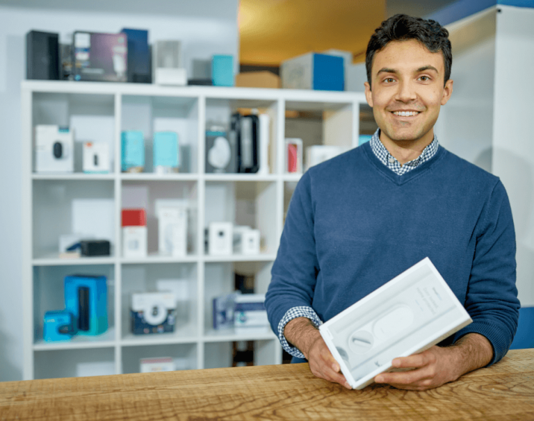

Hi, I'm John Quinn, I like to build human-centered products.
I led the Core Product team at SimpliSafe and other startups.
My background is in Consumer Insights & Design Thinking.
I build, write, teach, and have a few hobbies.
You can reach me through the following.